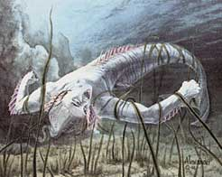
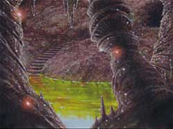
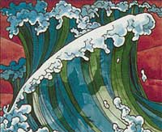

INCANTESIMI GENERALI DI ERAM
1° LIVELLO DI POTERE
| Call Upon Faith | Summoning |
| Sphere : | Summoning |
| Range : | 0 |
| Components : | V, S, M |
| Duration : | Speciale |
| Casting Time : | 1 |
| Area of Effect : | The Caster |
| Saving Throw : | None |
Prima di iniziare una qualsiasi difficile azione il chierico può invocare l'aiuto della propria divinità. In questo modo il chierico otterrà un beneficio corrispondente ad un bonus +3 (+15%) che potrà applicare ad un singolo tiro necessario ad effettuare il compimento dell'azione. Questo beneficio può essere utilizzato solo per il compimento di un'azione che inizi e si concluda nel round immediatamente successivo a quello del lancio della presente magia. Si noti che questo incantesimo non può essere utilizzato nel caso in cui il chierico desideri effettuare un'azione consistente nell'invocare un intervento divino. Il componente materiale di questo incantesimo è il simbolo sacro del chierico.
| Combine | Summoning |
| Sphere : | All |
| Range : | Tocco |
| Components : | V, S |
| Duration : | Speciale |
| Casting Time : | 1 round |
| Area of Effect : | Speciale |
| Saving Throw : | None |
Questo incantesimo cumulativo può essere utilizzato da due a quattro chierici. La magia, per precisione, viene utilizzata sempre sul chierico del livello di esperienza più lato (in caso di chierici di pari livello su uno a loro scelta) da quelli di livello più basso. Costoro lanciano la magia toccando il chierico che deve ottenere gli effetti benefici. Quest'ultimo quindi potrà considerarsi, fino a che perdura questa magia, di un livello di esperienza superiore per ogni chierico che ha utilizzato su di lui questo incantesimo al solo fine di effettuare un'azione di scacciare o controllare i non morti e di determinare il livello di lancio dei propri incantesimi. Si noti che, nonostante il chierico possa lanciare magie ad un livello di lancio superiore, questo incantesimo non permette al chierico di accedere a magie diverse da quelle alle quali aveva regolarmente accesso né di ottenere punti preghiera supplementari. Per funzionare la magia richiede che il chierico beneficiario non si sposti dalla posizione occupata al momento del suo lancio nonché il mantenimento della concentrazione da parte dei chierici che l'hanno lanciata i quali, se attaccati durante il mantenimento della concentrazione, saranno considerati (sempre che non decidano di interromperla) come se fossero storditi [stunned]. Se, per qualsiasi motivo, viene meno la concentrazione del chierico che ha lanciato questo incantesimo od il suo contatto fisico con il beneficiario (ad es. il chierico che ha lanciato la magia si sposta o cade al suolo knockdown) la magia terminerà immediatamente solo in relazione al chierico che ha interrotto la concentrazione. Se, invece, è il chierico che beneficia di questa magia a spostarsi dalla posizione originariamente occupata (od a cadere al suolo knockdown) costui farà venir meno tutte le magie di combine che gli erano state lanciate. Si noti, infine, che se è solo il chierico beneficiario a perdere la concentrazione nel lancio delle sue magie ciò non influenzerà gli incantesimi di combine che gli erano stati lanciati addosso.
| Detect Magic | Divination |
| Sphere : | Divination |
| Range : | 0 |
| Components : | V, S, M |
| Duration : | 1 round |
| Casting Time : | 1 round |
| Area of Effect : | The Caster |
| Saving Throw : | None |
Quando il chierico lancia questo incantesimo riesce a percepire la luminosità delle aure magiche presenti entro 30 metri di distanza dallo stesso. Per poter percepire la luminosità dell'aura, però, il chierico deve poter vedere, anche se parzialmente, l'oggetto o la zona in cui l'aura è in effetto. Un chierico non potrà vedere, ad es. l'aura di un oggetto magico che si trova all'interno di uno zaino o sepolto da macerie. In base all'intensità dell'aura, inoltre, il chierico potrà determinare la potenza dell'incantamento. Se si tratta di effetti magici dovuti ad incantesimi, quindi, il chierico potrà determinare il livello di potere della magia di cui analizza gli effetti. Se, invece, si tratta di oggetti magici costui potrà determinarne la potenza dell'incantamento come indicata nella seguente scala:
|
POTENZA DELL'INCANTAMENTO |
PUNTI ESPERIENZA |
| Least Minor Enchantment | 75 punti esperienza |
| Lesser Minor Enchantment | 100 punti esperienza |
| Minor Enchantment | 150 punti esperienza |
| Superior Minor Enchantment | 250 punti esperienza |
| Greater Minor Enchantment | 375 punti esperienza |
| Lesser Enchantment | 500 punti esperienza |
| Superior Enchantment | 1000 punti esperienza |
| Greater Enchantment | 1500 punti esperienza |
Il componente materiale di questo incantesimo è il simbolo sacro del chierico.
| Endure Cold | Abjuration |
| Sphere : | Protection |
| Range : | Tocco |
| Components : | V, S, M |
| Duration : | 24 ore |
| Casting Time : | 1 round |
| Area of Effect : | Una creatura |
| Saving Throw : | None |
Questo incantesimo protegge la creatura che lo riceve dal freddo. In particolare, per un'intera giornata, chi riceve questo incantesimo non patirà gli effetti di temperature molto basse (fino a -20° centigradi) anche indossando dei comuni vestiti. Qualora il personaggio si trovi esposto a temperature inferiori alla soglia di resistenza la magia terminerà immediatamente. Qualora, inoltre, il personaggio subisce una qualsiasi forma di danno (sia di origine magica che naturale) da freddo la magia terminerà immediatamente ma il primo danno di questo tipo subito sarà ridotto di 2 punti danno + 1 punto danno per livello di lancio della magia (fino ad un massimo di 10 punti danno all'8° livello di esperienza). Questa magia, infine, terminerà immediatamente qualora chi l'ha ricevuta si sottopone agli effetti di una qualsiasi altra protezione magica al freddo. Il componente materiale di questo incantesimo è il simbolo sacro del chierico.
| Entangle Seaweed | Alteration |
| Sphere : | Plant |
| Range : | 30 metri |
| Components : | V, S, M |
| Duration : | 1 turno |
| Casting Time : | 4 |
| Area of Effect : | Speciale |
| Saving Throw : | Speciale |
|
 |
Utilizzando questo incantesimo il chierico fa letteralmente attorcigliare la
vegetazione marina presente sul suolo dell'area d'effetto alle creature che vi entrano
al fine di impedirne o rallentarne i movimenti (questa versione dell'incantesimo
non può essere utilizzata sulle piante terrestri). Il chierico potrà influenzare la
superficie presente in un numero di esagoni di 3 metri di diametro pari a due
più un esagono supplementare ogni due livelli di lancio oltre il primo (2
esagoni al 1° livello di lancio, 3 esagoni al 3° livello di lancio, e così
via...) fino ad un massimo di sette esagoni all'11° livello di lancio. Il
chierico può disporre queste aree a piacimento purché tutte si trovino
all'interno del raggio di azione della magia e siano disposte senza soluzione di
continuità tra di loro. Affinché questa magia possa essere lanciata nella zona
esserci un'adeguata vegetazione. In particolare occorre almeno la presenza di
alghe lunghe intorno ai trenta centimetri perché la magia abbia effetto.
A differenza della vegetazione di superficie, che può variare da
categoria A a D, la presenza di alghe marine sarà differenziata in sole due
categorie secondo il seguente schema (che inoltre influenza il tiro salvezza
delle creature presenti o che entrano nell'area dove ha effetto la magia): |
| Find Water |
Divination |
| Sphere : |
Divination |
| Range : |
0 |
| Components : |
V, S, M |
| Duration : |
Istantanea |
| Casting Time : |
1 round |
| Area of Effect : |
The Caster |
| Saving Throw : |
None |
Attraverso questa magia il chierico percepisce la presenza di acqua o falde acquifere entro 100 metri dalla sua persona. In particolare al lancio della magia il chierico potrà individuare la presenza di acqua a tale distanza venendo a conoscenza anche della quantità di acqua presente secondo il seguente schema: piccolo ammontare (come ad esempio una pozzanghera, si noti che la magia rivelerà unicamente concentrazioni di acqua pari ad almeno un litro); ammontare di discrete proporzioni (quale ad esempio una botte, una cisterna, una grossa pozza), riserva considerevole (si tratta di fonti dal difficile esaurimenti quali un pozzo connesso ad una falda, uno stagno, un ruscello o un fiume, una fonte, una palude, un lago od il mare). Il chierico, inoltre, avrà una possibilità pari al 5% per livello di esperienza (fino ad un massimo di 75%) di capire se si tratta di acqua potabile o non utilizzabile per bere (il chierico non saprà però il motivo per cui l'acqua individuata non sia potabile, potendo essere ad esempio semplicemente salata, contaminata oppure avvelenata). Quando individua l'acqua presente nel raggio d'azione il chierico verrà a conoscenza anche della direzione della stessa nonché della sua distanza in metri (si noti, a tal fine, che il chierico individua tale presenza anche attraverso mura, roccia od altri ostacoli fisici). La magia non rivelerà la presenza di liquidi diversi dall'acqua. Il componente materiale di questo incantesimo è un ramo da rabdomante dal peso di 1 libbra e dal costo di 5 monete d'oro che non si consuma al lancio della magia.
| Magical Stone | Enchantment |
| Sphere : | Combat |
| Range : | Tocco |
| Components : | V, S, M |
| Duration : | Speciale |
| Casting Time : | 4 |
| Area of Effect : | da 1 a 3 ciottoli |
| Saving Throw : | None |
Utilizzando questo incantesimo il chierico può incantare fino a tre ciottoli non più grandi di quelli utilizzabili come proiettili comuni di una fionda. Una volta incantati i ciottoli potranno essere scagliati a mano fino a 30 metri di distanza. I ciottoli potranno essere scagliati anche tutti nel medesimo round (il primo ad un fattore iniziativa pari a +3, gli altri a fine round come attacchi multipli non simultanei). Per colpire il bersaglio sarà necessario effettuare un normale tiro per colpire (modificato dalla destrezza) anche se l'incantamento divino presente sui ciottoli farà automaticamente considerare abile nel loro uso chi si appresta a lanciarli. I ciottoli, inoltre, saranno considerati come armi magiche con incantamento +1 al solo fine di determinare se siano in grado di danneggiare creature immuni alle armi normali. Ogni ciottolo che va a segno provocherà 1d4 danni da impatto, 2d4 danni da impatto contro i non morti e le creature demoniache. Una volta lanciati i ciottoli si sgretoleranno in polvere definitivamente. I ciottoli possono anche essere lanciati come proiettili di una fionda ma in tal caso saranno utilizzate le normali regole di attacco (tranne che per l'incantamento e per i danni subiti dal bersaglio una volta colpito). Se i ciottoli non sono utilizzati immediatamente la magia perdurerà sugli stessi per 30 rounds al termine dei quali i ciottoli si sgretoleranno comunque in polvere come se fossero stati lanciati. Il componente materiale di questo incantesimo è il simbolo sacro del chierico e fino a tre ciottoli di fiume dalla forma assai levigata dal valore di 1 monete d'oro (per tutti e tre i ciottoli) e dal peso di 1/2 libbra l'uno.
| Precipitation | Conjuration |
| Sphere : | Elemental Water |
| Range : | 30 metri |
| Components : | V, S, M |
| Duration : | 2-10 round (1d6+1d4) |
| Casting Time : | 4 |
| Area of Effect : | Sfera di 15 metri di diametro |
| Saving Throw : | None |
Quando il chierico lancia questo incantesimo una sottile ma fitta pioggerella inizia a cadere nell'area d'effetto della magia. Le candele (se non adeguatamente schermate) si spegneranno immediatamente, le torce e le lanterne avranno il 25% di possibilità alla fine di ogni round di permanenza nell'area d'effetto di spegnersi per essersi totalmente bagnate. Se queste fonti sono schermate avranno solo il 10% di possibilità di spegnersi. Fuochi o fiamme di dimensioni maggiori non saranno spente della pioggerella. Fuoco di natura magica (si pensi a quello prodotto da incantesimi quali fireball e burning hands oppure a quello prodotto da creature, come ad esempio il soffio del drago) potrà propagarsi nell'area incantata ma la sua forza (solo all'interno di detta area) sarà ridimensionata. Tutti i danni prodotti con fuoco magico saranno infatti ridotti del 25% (riduzione calcolata, però, per difetto), inoltre, tale fuoco avrà solo il 50% di possibilità di incendiare gli oggetti ai quali normalmente avrebbe fatto prendere fuoco all'interno dell'area d'effetto. Inoltre, tutti coloro si trovano nell'area d'effetto della magia riceveranno un bonus di +1 a qualsiasi tiro salvezza contro fuoco (ciò indipendentemente dalla circostanza che la fonte del fuoco magico si trovi all'interno od all'esterno dell'area). Infine, le creature il cui corpo è formato interamente od in gran parte da fiamme (si pensi ad un elementale del fuoco) dovranno superare un tiro salvezza contro raggio della morte appena entrate nell'area d'effetto di questo incantesimo. Se il tiro salvezza fallisce costoro saranno considerate incapacitate fino a che resteranno all'interno dell'area d'effetto della magia ed i loro attacchi (se basati sul fuoco) saranno ridotti come sopra specificato del 25% dei danni. Creature di dadi vita pari o superiore a 9 sono immuni all'effetto di questo incantesimo. Il componente materiale di questo incantesimo è il simbolo sacro del chierico.
| Purify Food and Drink | Alteration |
| Sphere : | All |
| Range : | 30 metri |
| Components : | V, S |
| Duration : | Istantanea |
| Casting Time : | 1 round |
| Area of Effect : | Speciale |
| Saving Throw : | None |
Attraverso questo incantesimo il chierico è in grado di purificare bevande o cibo che era stato in qualsiasi modo contaminato (ad esempio avvelenato od in stato di putrefazione). Si noti che questa magia funziona solo sul cibo per cui può essere utilizzata sulla carne solo dopo che la stessa sia stata macellata non potendo la magia essere lanciata direttamente su un cadavere. Stesso discorso vale per le bevande che devono essere state imbottigliate (non potendosi ad es. lanciarsi la magia su un pozzo) e sui frutti e le verdure che devono essere stati in precedenza raccolti (non potendo la magia essere lanciata direttamente sulla pianta). Il cibo o le bevande così purificate saranno buone da mangiare e da bere (ovviamente qualora fosse necessario cuocerle sarà comunque ancora necessario farlo). La magia non previene il naturale decadimento dei prodotti successivamente al suo lancio od, in ogni caso, una eventuale nuova contaminazione degli stessi. Per ogni livello di lancio dell'incantesimo il chierico può purificare un ammontare di cibo e bevande sufficienti a sfamare e dissetare una creatura di taglia media per un intero giorno. Questo incantesimo non ha alcun effetto su cibi o bevande magiche (si pensi ad una pozione) od in altro modo incantati (si pensi ad una razione che è stata oggetto di una maledizione).
| Sanctuary | Abjuration |
| Sphere : | Protection |
| Range : | Tocco |
| Components : | V, S, M |
| Duration : | 2 rounds + 1 round/livello |
| Casting Time : | 4 |
| Area of Effect : | Una creatura |
| Saving Throw : | Speciale |
Quando il chierico lancia questa magia la creatura che la riceve viene protetta dalla divinità agli occhi dei propri nemici. Tutte le creature ostili alla creatura protetta presenti al momento del lancio o che la incontrino nel corso della durata della magia devono effettuare un tiro salvezza contro incantesimi. Se il tiro salvezza è fallito costoro perderanno la consapevolezza della presenza della creatura protetta agendo come se la stessa non fosse presente per tutta la durata dell'incantesimo. Se, però, la creatura protetta effettuerà una qualsiasi azione possa essere considerata, anche in senso lato, offensiva (sia direttamente che indirettamente) nei confronti di una qualsiasi creatura (non solo quindi nei confronti di chi ha fallito il tiro salvezza) la magia terminerà alla fine del round in cui il soggetto ha posto in essere tale azione (ad esempio riattivare una trappola precedentemente disattivata sarà considerata un'azione di tipo offensivo). Si noti che il lancio di incantesimi di mero potenziamento, di protezione o di cura effettuati sulla propria persona non saranno in alcun caso ritenute azioni di tipo offensivo, laddove, invece, se tali incantesimi siano lanciati su una diversa creatura questi potranno assumere (ad insindacabile giudizio del Dungeon Master) i connotati di un'azione di tipo offensivo. Il componente materiale di questo incantesimo è il simbolo sacro del chierico ed un piccolo specchio d'argento dal peso di 1/2 libbra e dal costo di 15 g.p. che si consuma al momento del lancio.
| Water Shield | Abjuration |
| Sphere : | Protection |
| Range : | 0 |
| Components : | V, S |
| Duration : | 1 ora per livello |
| Casting Time : | 5 |
| Area of Effect : | The Caster |
| Saving Throw : | None |
Quando il chierico lancia questo incantesimo costui (e gli oggetti da esso trasportati) viene protetto da una barriera invisibile impenetrabile all'acqua. Per tale motivo il chierico risulterà completamente asciutto anche qualora si trovi sotto una pioggia incessante oppure si immerga totalmente nell'acqua. Qualora il chierico sia oggetto di un attacco basato sull'acqua (si pensi alle magie della scuola evocation water), inoltre, questa magia dona a costui una sorta di resistenza magica pari al 25%. Se il tiro percentuale ha successo il chierico sarà considerato totalmente immune agli effetti dell'attacco o della magia. Se, invece, il tiro percentuale fallisce il chierico subirà regolarmente gli effetti dell'attacco o dell'incantesimo (si bagnerà quindi regolarmente) ricevendo, però, in ogni caso, un bonus di +1 agli eventuali tiri salvezza concessi per evitare o ridurre gli effetti subiti.
| Wind Sprint | Alteration |
| Sphere : | Elemental Water |
| Range : | Tocco |
| Components : | V, S |
| Duration : | 10 round |
| Casting Time : | 3 |
| Area of Effect : | Una creatura |
| Saving Throw : | None |
Questo incantesimo può essere lanciato solo su esseri umani, semi-umani od umanoidi che non siano considerabili creature marine. Per tutta la durata di questo incantesimo queste creature potranno nuotare ad velocità più elevata incrementando di due esagoni (di 3 metri l'uno) al movimento normalmente effettuato in un round (un esagono in caso di mezzo movimento). Questo beneficio può cumularsi con quello previsto dalla competenza "Swimming".
| Wind Column | Evocation Air |
| Sphere : | Protection |
| Range : | 15 metri |
| Components : | V, S |
| Duration : | 10 round |
| Casting Time : | 4 |
| Area of Effect : | Sfera di 3 metri di diametro |
| Saving Throw : | None |
Quando il chierico lancia questo incantesimo viene ad esistenza una colonna di
forte vento in una sfera di 3 metri di diametro (un esagono). Se una creatura,
di taglia massima Large, occupa quella posizione costei risulterà protetta dal
vento e riceverà i seguenti benefici:
- Tutti gli attacchi effettuati scagliando proiettili con armi da tiro (od
oggetti ad essi assimilabili), ad eccezione del macigno scagliato dal bastone a
fionda e del dardo scagliato dalle balestre pesanti, diretti all'interno della
colonna di vento o che comunque passino attraverso la stessa riceveranno una
penalità di -2 al tiro per colpire. Questa penalità si applica anche agli
attacchi posti in essere dall'interno della colonna verso l'esterno.
- Tutti gli attacchi effettuati scagliando armi da lancio (od oggetti ad essi
assimilabili), macigni scagliati dal bastone a fionda e dardi di balestre
pesanti, diretti all'interno della colonna di vento o che comunque passino
attraverso la stessa riceveranno una penalità di -1 al tiro per colpire (massi o
proiettili di dimensioni maggiori non riceveranno alcuna penalità). Questa
penalità si applica anche agli attacchi posti in essere dall'interno della
colonna verso l'esterno.
- La creatura che si trova all'interno della posizione occupata dalla colonna di
vento riceverà un bonus di +3 a tutti i tiri salvezza dovuti alla propagazione
nell'area di gas, polveri, spore, od altre altre sostanze volatili (si pensi, ad
esempio, al propagarsi di un gas tossico od soffio di gas velenoso del drago
verde).
La colonna di vento resta stabile nella posizione in cui è stata creata per
tutta la durata dell'incantesimo.
2° LIVELLO DI POTERE
| Elemental Tentacle | Evocation |
| Sphere : | Combat |
| Range : | 15 metri |
| Components : | V, S, M |
| Duration : | 1 round per livello |
| Casting Time : | 1 round |
| Area of Effect : | Speciale |
| Saving Throw : | None |
Lanciando questa magia il chierico fa apparire un lungo tentacolo interamente
costituito di materiale elementale proveniente dal piano dell'acqua. Il
tentacolo elementale non potrà spostarsi dal luogo ove è stato creato (occuperà
quella posizione come se fosse una creatura inamovibile) ma potrà essere
utilizzato dal chierico per attaccare per tutta la durata della magia. Per
comandare il tentacolo al fine di farlo attaccare il chierico deve concentrarsi
ed effettuare un'azione complessa assimilabile al lancio di un incantesimo
avente fattore iniziativa pari a +5. Quindi l'attacco del tentacolo avverrà
simultaneamente al compimento di tale azione. Si noti che il chierico deve
trovarsi ad una distanza massima pari a 15 metri dal tentacolo per poterlo
comandare efficacemente. Date le sue dimensioni, il tentacolo può attaccare con
un attacco in corpo a corpo una qualsiasi creatura si trovi entro 6 metri di
distanza dallo stesso (2 esagoni). Si noti che il tentacolo muovendosi solo al
comando del chierico non effettuerà in alcun caso attacchi di opportunità.
Quando il chierico non impartisce l'ordine di attacco al tentacolo, lo stesso
resterà fermo in attesa di ordini. Per effettuare il suo attacco, il tentacolo
utilizzerà la Thac0 base del chierico. Il tentacolo può essere distrutto
fisicamente ma in ogni caso è totalmente immune ai danni non magici. Gli effetti
dell'attacco, la classe armatura e la resistenza del tentacolo saranno quelli di
seguito specificati:
Acqua:
Il tentacolo, che è composto interamente di acqua gelida, ha una classe armatura
pari ad AC 6, punti ferita pari a 15 + 1 per livello di lancio della magia. Il
suo attacco provoca 1d6 danni da botta + 4 danni da freddo intenso. La creatura
inoltre dovrà superare un tiro salvezza su robustezza per non
restare incapacitata dal freddo intenso per 1d2 round. Le creature abituate a
vivere tra i ghiacci nonché le creature immuni al freddo od in grado di
resistere interamente ai danni da freddo prodotti dal tentacolo sono immuni agli
effetti secondari dell'attacco.
Alla fine di ogni
round di durata della magia, con una free action ad attivezione mentale, il
chierico potrà far sparire il tentacolo sempre che si trovi ad una distanza
massima pari a 15 metri dallo stesso. Il componente materiale di questo
incantesimo è il simbolo sacro del chierico ed una gemma di tipo ametrino dal
valore di 10 monete d'oro e dal peso di 1/10 di libbra che si consuma al lancio
della magia.
| Elemental Trap | Evocation |
| Sphere : | Wards |
| Range : | Tocco |
| Components : | V, S, M |
| Duration : | Speciale |
| Casting Time : | 1 turn |
| Area of Effect : | Speciale |
| Saving Throw : | None |
Quando il chierico effettua questo piccolo rituale costui crea una trappola
magica in una sezione di suolo solido delle dimensioni di un esagono (3 metri di
diametro). Al momento della creazione della trappola il chierico pronuncia la
parola magica di disattivazione. Non appena, infatti, una qualsiasi creatura
entra nella zona protetta dalla trappola senza pronunciare la parola magica di
disattivazione la trappola si attiverà provocando danni ed effetti a seconda del
piano elementale di riferimento utilizzato dal chierico al momento del
posizionamento della trappola.
In particolare, il chierico potrà selezionare una trappola dei seguenti piani
elementali:
Acqua:
La creatura sarà colpita da un getto di liquido incredibilmente freddo e subirà
2d4 danni da freddo magico, 3d4 se la magia è lanciata almeno al 7° livello di
lancio. La creatura inoltre dovrà superare un tiro salvezza su robustezza per non restare incapacitata dal freddo intenso per 1d3 round.
La magia perdurerà fino a che la trappola non sarà stata attivata o previamente
dissolta magicamente. Il chierico può mantenere contemporaneamente attive una
trappola ogni tre livelli di esperienza raggiunti (una trappola al 3° livello,
due trappole al 6°, e così via...). In ogni momento, però, il chierico potrà far
terminare la magia (con un'azione complessa che si considera assimilabile al
lancio di un incantesimo, che richiede un intero round ed il mantenimento della
concentrazione) disattivando permanentemente una qualsiasi trappola che ha
precedentemente posizionato (indipendentemente dalla distanza e dalla locazione
ove tale trappola si trova). Il componente materiale di questo incantesimo è
polvere d'argento dal valore pari a 10 monete d'oro e dal peso pari ad 1/10 di
libbra che si consuma al lancio dell'incantesimo.
| Elemental Weapon |
Evocation |
| Sphere : |
Combat |
| Range : |
Tocco |
| Components : |
V, S, M |
| Duration : |
3 round + 1 round ogni 2 livelli |
| Casting Time : |
1 round |
| Area of Effect : |
Un'arma |
| Saving Throw : |
None |
Attraverso questa magia il chierico incanta la propria arma infondendo nella
stessa energia del piano elementale interno dell'acqua.L'arma otterrà i seguenti
benefici:
Acqua:
L'arma sarà circondata da un visibile alone di colore azzurro intenso. Quando il
chierico che utilizza l'arma va a segno contro un bersaglio lo stesso subirà,
oltre ai comuni danni dell'arma, 1d6+2 danni supplementari da freddo di natura
magica.
La magia terminerà una volta trascorsi 3 round + 1 round ogni due livelli di
lancio dell'incantesimo (3 round al 1° livello, 4 round al 2° e 3° livello, e
così via...). Se, 'però, per qualsiasi motivo il chierico che ha lanciato
l'incantesimo smette di impugnare l'arma la magia terminerà immediatamente anche
prima dello scadere della sua durata massima.
Questo incantesimo non può essere lanciato su armi sulle quali risulti in corso
(nel senso di attivo in quel determinato momento) un incantamento che abbia
effetti similari anche se facenti riferimento ad un diverso piano elementale, né
tali incantamenti protranno essere validamente attivati nel corso della durata
di questo incantesimo (si pensi alle armi incantate con incantamenti quali of
Flaming, Lesser o Superior Elemental, Burning Steel, ecc...). La magia, ad
esempio, potrà essere lanciata su un'arma incantata con un incantamento di
Lesser Elemental (incantamento che si attiva con tiri per colpire pari a
17,18,19 e 20 naturale) ma per tutta la sua durata impedirà allo stesso di
attivarsi indipendentemente dai tiri per colpire effettuati dal chierico. Il
componente materiale di questo incantesimo è il simbolo sacro del chierico ed
una gemma di tipo ametrino dal valore di 10 monete d'oro e dal peso di 1/10 di
libbra che si consuma al lancio della magia.
| Resist Cold |
Abjuration |
| Sphere : |
Protection |
| Range : |
Tocco |
| Components : |
V, S, M |
| Duration : |
1 round per livello |
| Casting Time : |
5 |
| Area of Effect : |
Una creatura |
| Saving Throw : |
None |
Questo incantesimo protegge la creatura che lo riceve dal freddo sia di origine magica che naturale. Per tutta la durata dell'incantesimo la creatura protetta subirà solo la metà (calcolata per difetto) di tutti i danni da freddo. Inoltre, qualora la stessa debba superare un qualsiasi tiro salvezza per ridurre il danno subito dal freddo costei riceverà un bonus di +2 al tiro. Il componente materiale di questo incantesimo è il simbolo sacro del chierico ed un piccolo pezzo di carbone dal peso di 0.2 libbre e dal costo di 0.1 monete d'oro che si consuma al lancio dell'incantesimo.
| Sanctify |
Summoning |
| Sphere : |
All |
| Range : |
Tocco |
| Components : |
V, S, M |
| Duration : |
24 ore |
| Casting Time : |
1 turno |
| Area of Effect : |
Speciale |
| Saving Throw : |
None |
Questo incantesimo permette al chierico di creare una zona sacra. In particolare l'area d'effetto di questa magia può essere la superficie di un edificio o di un qualsiasi terreno che abbia un'area non superiore a 20 metri quadrati per livello di lancio della magia. Dopo il lancio di questo incantesimo l'area viene pervasa dal potere divino. Per tale motivo, tutti coloro sono fedeli della medesima divinità ottengono un bonus di +2 a tutti i tiri salvezza finché restano all'interno dell'area santificata, tutti coloro sono fedeli di una divinità dello stesso gruppo, ad es. Fratellanza della Luce, riceveranno un bonus di +1 ai tiri salvezza, stesso bonus sarà ricevuto da chi non è fedele di alcuna divinità ma possiede il medesimo allineamento della divinità del chierico che ha lanciato la magia. Creature non fedeli a nessuna divinità con allineamento diverso ed, in ogni caso, fedeli di divinità appartenenti ad un diverso gruppo non riceveranno alcun beneficio. Tutte le creature (indipendentemente dalla loro fede) che si trovano nella zona consacrata e sono intenzionate ad attaccare, od in qualsiasi modo danneggiare, il chierico, i suoi fedeli, ed in generale il culto della divinità che ha consacrato il suolo riceveranno una penalità di -1 a tutti i tiri salvezza fino a che resteranno nell'area consacrata. Oltre a tale beneficio, qualsiasi tentativo di scacciare i non morti presenti all'interno dell'area otterrà un bonus di +2 al potenziale di scaccio, ciò indipendentemente dalla divinità adorata dal chierico che esegue lo scaccio. Il componente materiale di questo incantesimo è il simbolo sacro del chierico e rari incensi per un valore pari a 3 g.p. ogni 20 metri quadrati consacrati che si consumano al lancio della magia.
3° LIVELLO DI POTERE
| Accellerate Healing | Alteration |
| Sphere : | Time |
| Range : | Tocco |
| Components : | V, S |
| Duration : | 10 giorni |
| Casting Time : | 1 turno |
| Area of Effect : | Una creatura |
| Saving Throw : | None |
Attraverso l'uso di questa magia il chierico incrementa la
guarigione naturale delle ferite della creatura che la riceve. In particolare la
magia agisce sul recupero dei punti ferita che avviene quando una creatura si
riposa. Si noti, quindi, che i punti ferita curati non saranno in alcun caso
considerati cure magiche in quanto la magia implementa le cure naturali che chi
la riceve avrebbe comunque ricevuto attraverso il tempo ed il riposo. In
particolare, la magia raddoppia i punti ferita che normalmente la creatura
avrebbe recuperato risposando. Qualora il personaggio che si trova sotto gli
effetti di questo incantesimo non riposi la magia non svolgerà, quantomeno per
il corso di quella giornata, alcun effetto benefico sullo stesso. Nella
normalità dei casi i punti ferita persi si recuperano solo con il riposo. Il
riposo può essere comune o totale.
Affinché una creatura si consideri in condizioni di riposo comune occorre che la
stessa rispetti per 24 ore le seguenti condizioni:
* Non effettui alcuna azione stancante (ossia un'azione
che preveda l'accumulo di almeno un punto fatica).
* Non soffra per il digiuno o la disidratazione.
* Non effettui il lancio di alcun incantesimo, né utilizzi alcun potere speciale
od oggetto magico per l'attivazione dei quali (nonostante non sia richiesta la
concentrazione) il personaggio deve pronunciare parole od effettuare movimenti
assimilabili ai componenti verbali e somatici degli incantesimi.
* Non utilizzi alcuna competenza non relativa alle armi.
* Dorma per almeno 8 ore consecutive nell'arco delle 24 ore.
* Non si trovi esposto a condizioni ambientali avverse (restare sotto la pioggia
o all'agghiaccio, ad esempio, non consente un adeguato riposo).
* Trascorra tale periodo in posizione relativamente comodità, senza effettuare
attività complesse che richiedono sforzo od attenzione particolare per essere
compiute. In particolare, potranno ritenersi compatibili con una situazione di
riposo regolare le seguenti attività: camminare tranquillamente lungo un
sentiero, cavalcare in pianura o lungo una strada battuta, effettuare
comodamente un turno di guardia. Non saranno considerate, invece, compatibili
con una situazione di riposo regolare le seguenti attività: camminare senza
seguire comodamente un sentiero, cavalcare in zone impervie (foreste, colline,
montagne) e/o fuori da strade battute, effettuare una qualsiasi attività
lavorativa, effettuare una qualsiasi attività di studio o di ricerca.
Ogni 24 ore trascorse in condizioni di riposo comune,
quindi, una creatura recupera normalmente 1 punto ferita perso (si noti che le
creature mostruose recuperano attraverso il riposo comune 1 punto ferita
supplementare per ogni due dadi vita posseduti arrotondati per difetto). In una
situazione di riposo comune, dunque, chi si trova sotto gli effetti di questa
magia recupererà 2 punti ferita ogni 24 ore.
Affinché una creatura si consideri in condizioni di riposo totale (solo le
creature con intelligenza almeno pari a Low [5] possono decidere di effettuare
riposo totale), oltre a rispettare le suddette regole per il riposo comune,
occorre che la stessa trascorra 24 rispettando le seguenti ulteriori condizioni:
* Non effettui
alcun tipo di attività se non quella di dedicarsi completamente al riposo.
* Disponga di cibo e bevande tali che da poter essere considerato ben nutrito ed
idratato.
* Disponga di un comodo giaciglio o, comunque, di una posizione sulla quale
adagiarsi che possa considerarsi per la creatura una postazione comoda (si pensi
ad un comodo letto per un umano od un semi-umano).
* Possa riposare in un luogo chiuso e ben riscaldato, dove vi sia una
temperatura costante ed adeguata (per tale motivo si consideri nella normalità
dei casi un personaggio che si riposi senza il riparo almeno di una tenda, senza
il calore di un fuoco e senza la comodità di un sacco a pelo, non potrà
effettuare riposo totale ma solo riposo comune).
Ogni creatura
che si trova in una posizione di riposo totale recupera 1 punto ferita
supplementare in più rispetto a quanti ne avrebbe ottenuti in 24 di riposo
comune. In una situazione di riposo totale, dunque, chi si trova sotto gli
effetti di questa magia recupererà 4 punti ferita ogni 24 ore.
Si noti che questo incantesimo raddoppia unicamente i punti ferita recuperati attraverso il riposo non eventuali punti ferita supplementari ottenuti con altri metodi non magici (si pensi all'utilizzo di unguenti erboristici oppure alle cure mediche).
| Control Marine Animal | Charm |
| Sphere : | Animal |
| Range : | 30 metri |
| Components : | V, S, M |
| Duration : | 1 round per livello (a partire da quello successivo al lancio) |
| Casting Time : | 6 |
| Area of Effect : | Un animale |
| Saving Throw : | Negates |
Questo incantesimo può essere lanciato validamente solo su un animale marino o su una sua versione gigante avente un punteggio di intelligenza compreso tra Animal Intelligence (1) e Semi-Intelligent (2-4). L'animale ha diritto a superare un tiro salvezza su mente per evitare gli effetti della magia. Se il tiro salvezza fallisce il chierico potrà impartire ordini mentali all'animale (con le medesime regole utilizzate per le creatura convocata magicamente) il quale obbedirà a tali ordini a partire dal round successivo a quello di lancio della magia, per un ammontare complessivo di round pari ad uno per livello di lancio della stessa. Il chierico può impartire il primo ordine già nel corso del lancio dell'incantesimo. Si noti, però, che qualora il chierico impartisca un ordine sicuramente suicida (che, ovviamente, l'animale possa ritenere come tale) la magia terminerà immediatamente. Si consideri, inoltre, che se all'animale è impartito l'ordine di attaccare una creatura avente un ammontare di dadi vita superiore al doppio di quelli dallo stesso posseduti o che sia, comunque, di almeno due taglie superiore rispetto alla dimensione dell'animale, costui ha diritto (alla fine del round in cui è stato impartito l'ordine) a superare un nuovo tiro salvezza con un bonus del +10%. Se il tiro salvezza riesce la magia terminerà immediatamente altrimenti l'animale procederà ad attaccare la creatura indicata (un nuovo tiro salvezza sarà richiesto solo se il chierico impone di attaccare una diversa creatura che permetta anch'essa all'animale di effettuare un nuovo tiro salvezza). Il componente materiale di questo incantesimo è il simbolo sacro del chierico.
| Dispel Magic | Abjuration |
| Sphere : | All |
| Range : | 60 metri |
| Components : | V, S |
| Duration : | Istantanea |
| Casting Time : | 6 |
| Area of Effect : | Sfera di 3 metri di diametro |
| Saving Throw : | None |
Quando il chierico lancia questa magia ha una certa possibilità di dissipare
l'energia magica presente nell'area d'effetto. In particolare, all'uso di questa
magia, potranno verificarsi una serie di effetti (si noti che la magia proverà
automaticamente a dissipare tutta la magia presente nell'area senza che il
chierico possa operare alcuna forma di selezione o distinzione).
In primo luogo il chierico ha una certa possibilità di dissolvere effetti magici
presenti nell'area d'effetto, nonché quelli attivi sulle creature o sugli
oggetti presenti nella medesima area. Tali effetti magici possono essere
scaturiti dal lancio di incantesimi, dall'uso di poteri magici innati oppure
dall'utilizzo di oggetti magici. Orbene, per determinare se il chierico è
riuscito a dissipare questa forma di magia presente nell'area lo stesso dovrà
effettuare un tiro con 1d20 (si noti che se il chierico vuole dissipare effetti
magici di incantesimi lanciati da se stesso questo tiro si considererà
automaticamente avvenuto con successo senza che lo stesso debba effettuarlo, ciò
non vale però per effetti magici che il chierico ha attivato in altro modo come
ad esempio attraverso l'uso di oggetti magici). La possibilità base di dissipare
la magia sarà pari ad un tiro di 11 o più (corrispondente quindi al 50% di
possibilità).Occorrerà, quindi, confrontare il livello di lancio di questa magia
con quello dell'effetto magico presente nell'area. Per ogni livello di
differenza il chierico riceverà un bonus/malus di +1 al tiro. Se ad esempio un
chierico lancia una magia di dispel magic al 5° livello di lancio in un'area
dove è presente una creatura che è sotto l'effetto di una magia di invisibilità
lanciata al 3° livello il chierico usufruirà di un bonus di +2, dissipando,
quindi, l'invisibilità con un tiro pari a 9 o più. Si tenga presente che un tiro
pari a 20 si considera in ogni caso successo automatico laddove un tiro pari ad
1 sarà comunque un insuccesso. Se il tiro ha successo l'effetto magico sarà
stato definitivamente dissipato. Si noti che il livello di lancio degli effetti
magici varia a seconda della fonte di tale effetto e può essere determinato
consultando la seguente tabella:
| FONTE DELL'EFFETTO MAGICO | LIVELLO DI LANCIO |
| Incantesimo di mago o chierico | Livello di lancio della magia |
| Potere magico innato | Livello specificato oppure dadi vita della creatura |
| Minor Enchantment | 5° livello di lancio |
| Bacchetta Magica | 6° livello di lancio |
| Staffa | 8° livello di lancio |
| Pozione | 12° livello di lancio |
| Altri oggetti magici | 12° livello di lancio |
| Artefatti | Normalmente resistono alla magia dispel magic |
In secondo luogo questo incantesimo può dissipare la magia con la quale sono stati incantati gli oggetti magici presenti nell'area d'effetto (ciò, quindi, indipendentemente dall'uso che ne era stato fatto). Per ogni oggetto magico presente occorrerà effettuare un tiro con 1d20. La possibilità base di dissipare la magia sarà sempre pari ad un tiro di 11 o più (corrispondente quindi al 50% di possibilità).Occorrerà, quindi, confrontare il livello di lancio di questa magia con il livello corrispondente all'incantamento che è stato infuso nell'oggetto magico. Per ogni livello di differenza, quindi, il chierico riceverà un bonus/malus di +1 al tiro. Se, quindi, il tiro ha successo l'oggetto magico sarà disattivato 1d3+1 rounds (nei quali va calcolato il round in cui si è verificato il dispel magic) ed i suoi poteri non potranno essere utilizzati. Per fare alcuni esempi una pergamena magica letta non sortirà alcun effetto (né potranno consumarsi le magie presenti o verificarne la corretta scrittura) ed un'arma magica +2 si considererà per tale periodo una comune arma non dando più benefici e non permettendo di colpire le creature immuni alle armi normali. Si tenga presente che un tiro pari a 20 si considera in ogni caso successo automatico laddove un tiro pari ad 1 sarà comunque un insuccesso. Infine occorre notare che a differenza di ogni altro oggetto magico qualora l'incantamento di un liquido magico (come una pozione) sia dissolto con successo questi perderà definitivamente ed irrimediabilmente ogni potere magico. Per determinare il livello di lancio corrispondente agli incantamenti presenti sui vari oggetti si consulti la seguente tabella:
|
POTENZA DELL'INCANTAMENTO |
PUNTI ESPERIENZA |
LIVELLO CORRISPONDENTE |
| Least Minor Enchantment | 75 punti esperienza | 5° livello di lancio |
| Lesser Minor Enchantment | 100 punti esperienza | 6° livello di lancio |
| Minor Enchantment | 150 punti esperienza | 7° livello di lancio |
| Superior Minor Enchantment | 250 punti esperienza | 8° livello di lancio |
| Greater Minor Enchantment | 375 punti esperienza | 9° livello di lancio |
| Lesser Enchantment | 500 punti esperienza | 11° livello di lancio |
| Superior Enchantment | 1000 punti esperienza | 13° livello di lancio |
| Greater Enchantment | 1500 punti esperienza | 15° livello di lancio |
| Oggetti di potenza superiore | per ogni 500 punti esperienza | +1 livello di lancio oltre al 15° |
| Pozioni Magiche | Irrilevante | 12° livello di lancio |
| Pergamene Magiche | Irrilevante | 10° livello di lancio |
| Artefatti | Irrilevante | Impossibile dissolverne il potere |
Infine occorre osservare che questa magia ha effetto solo sugli effetti magici già presenti nell'area d'effetto al momento del lancio non influenzando quindi l'utilizzo di oggetti magici ed il lancio di incantesimo che avvengono nel medesimo round di combattimento ma ad un fattore di iniziativa successivo a quello del dispel magic.
| Hold Marine Animal | Charm |
| Sphere : | Animal |
| Range : | 30 metri |
| Components : | V, S, M |
| Duration : | 3 round + 1 round per livello |
| Casting Time : | 6 |
| Area of Effect : | Speciale |
| Saving Throw : | Negates |
Questo incantesimo può essere lanciato validamente solo su animali marini o sulle loro versioni giganti aventi un punteggio di intelligenza compreso tra Animal Intelligence (1) e Semi-Intelligent (2-4). In particolare il chierico potrà lanciare questo incantesimo su un numero massimo di animali, presenti entro il raggio di azione della magia, i cui dadi vita complessivi non superino una volta e mezza il livello di lancio dell'incantesimo (arrotondando per difetto). Per esempio, con una magia lanciata al 7° livello il chierico potrà influenzare un ammontare massimo di dadi vita pari a dieci. In ogni caso il chierico non può coinvolgere nell'incantesimo più di cinque creature animali (indipendentemente dal raggiungimento del suddetto limite di dadi vita). Ogni animale coinvolto ha diritto a superare un tiro salvezza su mente per evitare gli effetti della magia. Se la magia è lanciata su un unico esemplare costui subirà una penalità di -10% al tiro salvezza. Se il tiro salvezza fallisce l'animale resterà paralizzato (hold) per tutta la durata dell'incantesimo. Alla fine di ogni round in cui l'animale paralizzato subisce, in qualsiasi modo, la perdita di punti ferita, lo stesso avrà diritto ad effettuare nuovamente il tiro salvezza per liberarsi definitivamente degli effetti della magia (continuando a subire la su menzionata penalità in caso di magia lanciata su un solo bersaglio). Il componente materiale di questo incantesimo è il simbolo sacro del chierico.
| Water Breathing | Alteration |
| Sphere : | Elemental Water |
| Range : | Tocco |
| Components : | V, S |
| Duration : | 1 ora per livello |
| Casting Time : | 1 round |
| Area of Effect : | Una o più creature |
| Saving Throw : | None |
Chi riceve gli effetti di questo incantesimo sarà in grado di respirare tranquillamente sotto la superficie dell'acqua. In particolare la magia trasformerà l'acqua appena "respirata" dalla creatura in aria per tutta la durata della magia (la magia, infatti, non impedisce di deglutire acqua attivandosi solo quando la laringe resta aperta per la respirazione). Deve osservarsi che la magia funziona solo con l'acqua, sia essa salata o dolce, non trasformando in aria qualsiasi altro liquido diverso dall'acqua ingerito dal soggetto beneficiario. Si noti che il chierico può suddividere la durata dell'incantesimo in parti uguali (arrotondando per difetto non potendo utilizzare frazioni di ora) tra più soggetti che siano a costui adiacenti (e dallo stesso toccati) nel corso del lancio della magia. Il chierico, ad esempio, lanciando questa magia al al 7° livello, potrà suddividerla su se stesso ed altre due creature ottenendo per tutti una durata dell'incantesimo pari a due ore. In nessun caso la magia può essere lanciata su un numero totale di creature superiore a cinque.
| Water Walk | Alteration |
| Sphere : | Elemental Water |
| Range : | Tocco |
| Components : | V, S |
| Duration : | 1 turno per livello |
| Casting Time : | 1 round |
| Area of Effect : | Una creatura |
| Saving Throw : | None |
Attraverso il lancio di questo incantesimo il chierico può permettere alla creatura toccata di camminare sulla superficie dell'acqua come se fosse un pavimento solido. La magia funziona sull'acqua, sul fango e sulla neve permettendo alla creatura di non affondare e di muoversi senza le restrizioni al movimento previste da tali superfici. Si noti che il soggetto resterà ad un millimetro dalla superficie di tali elementi senza toccarla e senza lasciare, quindi, alcuna traccia e senza increspare la superficie dell'acqua. Questa magia non può essere lanciata sotto la superficie dell'acqua (del fango o della neve). Se, inoltre, il beneficiario di questo incantesimo prova, nel corso della sua durata, ad immergersi sotto la superficie dell'acqua (del fango o della neve) la magia terminerà immediatamente e definitivamente. Il medesimo risultato si verifica qualora chi si trova sotto gli effetti di questo incantesimo è spinto o trascinato sotto la superficie da una creatura, da una qualsiasi forza esterna o è travolto ed investito dalle onde.
| Weather Prediction | Divination |
| Sphere : | Weather |
| Range : | 0 |
| Components : | V, S |
| Duration : | Istantanea |
| Casting Time : | 1 round |
| Area of Effect : | The Caster |
| Saving Throw : | None |
Questa magia può essere lanciata soltanto all'aperto. Quando lancia questa magia il chierico viene a conoscenza delle condizioni atmosferiche prevalenti che si verificheranno nel luogo in cui la magia è stata lanciata. La previsione riguarderà tutto il resto della giornata e l'intero giorno successivo. In particolare, il chierico determinerà con esattezza l'intensità e la direzione generale dei venti, la tipologia e la quantità di eventuali precipitazioni, le variazioni della temperatura e la copertura nuvolosa. Il componente materiale di questo incantesimo è il simbolo sacro del chierico.
| Wind and Rain Protection | Abjuration |
| Sphere : | Wards, Traveler |
| Range : | 0 |
| Components : | V, S |
| Duration : | Speciale |
| Casting Time : | 1 round |
| Area of Effect : | Semi-sfera di 9 metri di diametro |
| Saving Throw : | None |
Questa magia può essere lanciata soltanto all'aperto su una qualsiasi superficie solida. Quando l'incantesimo è lanciato, l'area d'effetto (una semi-sfera di 15 metri di diametro centrata sul chierico che resta fissa una volta lanciata la magia) viene protetta dal vento e dalle altre precipitazioni atmosferiche. Per tutta la durata della magia le precipitazioni presenti ed il vento non potranno entrare nell'area d'effetto (saranno bloccati anche fenomeni atmosferici di forte intensità quale può essere, ad esempio, un tornado). Si noti che, funzionando solo su comuni precipitazioni, la magia non impedisce la presenza di pioggia, vento od altre condizioni atmosferiche create all'interno dell'area d'effetto con metodi alternativi (si pensi al lancio di magie). La magia terminerà i suoi effetti al raggiungimento del successivo momento di flusso di energia divina della divinità.
4° LIVELLO DI POTERE
| Control Temperature | Alteration |
| Sphere : | Weather |
| Range : | 0 |
| Components : | V, S |
| Duration : | 1 ora per livello |
| Casting Time : | 1 round |
| Area of Effect : | Sfera di 9 metri di diametro centrata sul chierico |
| Saving Throw : | None |
Quando il chierico lancia questo incantesimo la temperatura in una sfera di 9 metri di diametro centrata sul chierico, che si sposta per tutta la durata della magia con costui, sarà costantemente mantenuta a 15° centigradi, indipendentemente dalla temperatura esterna. Si noti che la sfera non protegga dagli agenti atmosferici, come vento e pioggia, che continueranno a avere effetto sulle creature presenti all'interno di essa. Tutte le creature presenti all'interno della sfera, inoltre, saranno meno danneggiate dagli effetti di freddo, fuoco o calore, che li coinvolgono. Costoro, infatti ridurranno del 25% (per eccesso) tutti i danni da freddo, fuoco o calore subiti fino a che resteranno all'interno della sfera creata con questo incantesimo (tale riduzione non sarà cumulata con altre riduzioni possedute nei confronti di tali elementi ma si applicherà unicamente la riduzione più forte).
| Fire Purge | Abjuration |
| Sphere : | Wards |
| Range : | 9 m. per livello |
| Components : | V, S, M |
| Duration : | 1 turno + 1 round per livello |
| Casting Time : | 1 round |
| Area of Effect : | Speciale |
| Saving Throw : | None |
Questo incantesimo permette al chierico di incantare un'area formata da tre aree circolari di 3 m. di diametro, più un'area delle medesime dimensioni per livello di esperienza che ha raggiunto. Nel formare l'area d'effetto complessiva della magia il chierico può posizionare le aree più piccole a piacimento purché le stesse siano tutte all'interno del raggio dell'incantesimo (nonché nel suo raggio visivo) ed adiacenti tra loro. Per tutta la durata dell'incantesimo, all'interno dell'area incantata, si diffonde una densa brina umida e fredda che copre ogni oggetto e che è costantemente presente vaporizzata nell'aria. L'effetto immediato di questo incantesimo è che tutti i fuochi normali presenti nell'area (da un incendio alla fiamma di una lanterna) si spegneranno alla fine del primo round (tali fuochi produrranno, quindi, ancora danni nel primo round di durata della magia). Inoltre, per tutta la durata della magia, nessun fuoco normale potrà bruciare nell'area d'effetto. Fuoco di natura magica (si pensi a quello prodotto da incantesimi quali fireball e burning hands oppure a quello prodotto da creature, come ad esempio il soffio del drago) potrà propagarsi nell'area incantata ma la sua forza (solo all'interno di detta area) sarà ridimensionata in modo tale da fargli produrre solo il 50% dei danni (calcolati per difetto), inoltre, tale fuoco non potrà incendiare alcun oggetto o causare altrimenti incendi all'interno dell'area d'effetto. Inoltre, tutti coloro si trovano nell'area d'effetto della magia riceveranno un bonus di +4 a qualsiasi tiro salvezza contro fuoco (ciò indipendentemente dalla circostanza che la fonte del fuoco magico si trovi all'interno od all'esterno dell'area). Infine, le creature il cui corpo è formato interamente od in gran parte da fiamme (si pensi ad un elementale del fuoco) si considereranno incapacitate fino a che resteranno all'interno dell'area d'effetto della magia ed i loro attacchi (se basati sul fuoco) produrranno come sopra specificato solo la metà dei danni. Il componente materiale di questo incantesimo è un'acquamarina dal valore di almeno 10 g.p. che si consuma al lancio della magia.
| Free Action | Alteration |
| Sphere : | Charm |
| Range : | Tocco |
| Components : | V, S, M |
| Duration : | 1 turn per level |
| Casting Time : | 7 |
| Area of Effect : | Una creatura |
| Saving Throw : | None |
Questo incantesimo permette alla creatura toccata di muoversi ed attaccare liberamente per tutta la sua durata rendendola immune a tutti gli effetti, sia magici che naturali, che bloccano o rallentano il suo corpo in via diretta (si pensi a magie quali hold person, slow, od agli effetti paralizzanti di alcuni veleni). La magia, quindi, permette al corpo di muoversi liberamente, ma non difende la mente della creatura da altri effetti mentali (si pensi ad es. al sonno magico od alla confusione), né impedisce a chi utilizza questo incantesimo di restare bloccato in ostacoli fisici, sia di natura magica che naturale, (si pensi alla difficoltà di camminare in una foresta o nella sabbia, oppure alla costrizione provocata dalle spire di un serpente gigante, a quella provocata dai rami di una pianta carnivora, od alle piante che bloccano il corpo della creatura a seguito di una magia di entangle). Questa magia, però, permette a chi la ricevere di combattere immerso nell'acqua (si badi non non nel fango) senza alcuna penalità e producendo il normale ammontare di danni, ciò indipendentemente dalla tipologia di arma utilizzata. Questo incantesimo, però, non consente a chi lo ricevere di respirare sott'acqua ed impone comunque alla creatura di muoversi in acqua nuotando regolarmente. Il componente materiale della magia è una fascia di cuoio benedetta dal valore di 5 monete d'oro e dal peso di 1/5 di libbra che deve apporsi ad un arto della creatura, questo componente si consumerà non appena gli effetti della magia termineranno (se la fascia è rimossa o distrutta prima della fine della magia la stessa terminerà immediatamente e la fascia diventerà istantaneamente polvere).
| Protection from Elemental | Abjuration |
| Sphere : | Elemental |
| Range : | Tocco |
| Components : | V, S, M |
| Duration : | 3 round + 1 round per livello |
| Casting Time : | 6 |
| Area of Effect : | Una creatura |
| Saving Throw : | Speciale |
Quando il chierico lancia questo incantesimo la creatura toccata sarà protetta magicamente nei confronti delle creature provenienti dal piano elementale dell'acqua nonché dai semi-piani con questo piano confinanti (ghiaccio, fango, vapore e sale). Tutte le creature provenienti da tali piani, infatti, non potranno toccare od attaccare in corpo a corpo la creatura protetta senza superare un tiro salvezza su magia. Questo tiro salvezza va ripetuto prima di ogni azione di attacco e se non è superato farà fallire completamente tale azione. Le creature di cinque o più dadi vita/livelli inferiori rispetto al livello di lancio della magia riceveranno una penalità di -10% a tale tiro salvezza, laddove le creature che posseggono un ammontare di dadi vita/livelli superiori rispetto al livello di lancio della magia riceveranno una bonus di +5% per ogni dado vita/livello risultante superiore rispetto al livello di lancio dell'incantesimo. Si noti che la magia non impedirà in alcun modo alle creature coinvolte dalla stessa di attaccare il beneficiario utilizzando poteri speciali od attacchi a distanza. Il componente materiale di questo incantesimo è il simbolo sacro del chierico.
| Protection from Lightining | Abjuration |
| Sphere : | Protection, Weather |
| Range : | Tocco |
| Components : | V, S, M |
| Duration : | Speciale |
| Casting Time : | 7 |
| Area of Effect : | Una creatura |
| Saving Throw : | None |
Quando il chierico lancia questo incantesimo la creatura toccata è protetta magicamente da ogni forma di danno elettrico sia di origine magica che naturale (si pensi ai danni elettrici provocati dal soffio di alcuni draghi, dal tocco di alcune creature, nonché dagli incantesimi). In particolare, la creatura protetta riceverà un bonus di +2 a tutti i tiri salvezza contro tali attacchi e l'incantesimo assorbirà il 66% dei danni da elettricità (arrotondati per difetto) subiti dalla stessa fino al raggiungimento di un ammontare massimo di danni assorbiti pari a 10 danni da elettricità per livello di lancio della magia. Una volta raggiunto tale massimale la magia terminerà immediatamente. In ogni caso, la magia terminerà una volta che sia trascorso, dal momento in cui è stata lanciata, un periodo di tempo pari ad un turno per livello di lancio della stessa. Il componente materiale di questa magia è il simbolo sacro del chierico.
| Reflecting Pool | Divination |
| Sphere : | Plant |
| Range : | Tocco |
| Components : | V, S, M |
| Duration : | 1 round per level |
| Casting Time : | 1 turn |
| Area of Effect : | Vasca della Rugiada |
| Saving Throw : | None |

Questo incantesimo può essere lanciato esclusivamente sull'acqua presente nella Grotta delle Perle Sacre, una grotta sacra con una piscina naturale presente in tutti i templi di Eram. Quando questa magia è lanciata, l'acqua in essa contenuta, si trasforma temporaneamente in un strumento divinatorio. Dopo aver lanciato un incantesimo il chierico può concentrarsi su una creatura che conosce. Questo metodo di divinazione, infatti, può essere indirizzato unicamente nei confronti di coloro possano essere definiti esseri viventi nel primo piano materiale. L'incantesimo non funziona, quindi, se focalizzato nei confronti di costruiti, oggetti animati, non-morti e creature extraplanari. A seconda del grado di conoscenza che il chierico possiede della creatura costui avrà maggiori o minori possibilità di riuscire nella divinazione. Se la creatura cercata è morta o si trova in un piano di esistenza diverso dal primo piano materiale la magia fallirà automaticamente. Si noti che il chierico non potrà conoscere la causa del suo fallimento. Le percentuali di riuscire nel tentativo sono espressi nella seguente tabella (si applicherà in ogni caso la percentuale migliore):
| Buona conoscenza personale [1] | 70 % + 1 % per livello |
| Conoscenza personale superficiale [2] | 60 % + 1 % per livello |
| Conoscenza da immagine impressa in modo artistico [3] | 50 % + 1 % per livello |
| Possesso di una parte del corpo della creatura | 40 % + 1 % per livello |
| Possesso di un oggetto personale della creatura | 30 % + 1 % per livello |
| Conoscenza ottenuta tramite informazioni dettagliate | 20 % + 1 % per livello |
| Conoscenza ottenuta tramite informazioni superficiali | 10 % + 1 % per livello |
| Se il chierico riesce in una prova nella competenza ceremony | bonus di + 5 % |
[1] Il chierico ha
una buona conoscenza personale se conosce personalmente la creatura avendo con
la stessa un rapporto di amicizia, di stretta collaborazione od in generale ha
frequentato la stessa per un periodo di tempo apprezzabile.
[2] Il chierico ha una conoscenza personale superficiale se ha incontrato la
creatura personalmente, più volte, ma non ha mai frequentato la stessa con
continuità. Si noti che qualora il chierico ha visto una creatura in modo
sporadico costui deve superare una prova di intelligenza per determinare se ne
ha un ricordo preciso. Se il chierico vede una creatura prima sconosciuta nella
stessa acqua della vasca costui dovrà effettuare una prova di intelligenza con
penalità di -2 per determinare se la visione (indipendentemente dal numero di
volte in cui è avvenuta) è stata abbastanza nitida da permettere una conoscenza
superficiale. Si noti che se queste prove di intelligenza falliscono il
personaggio non potrà utilizzare la propria conoscenza per effettuare il
tentativo ma dovrà basarsi interamente su altri elementi.
[3] Perchè possa ritenersi valida l'immagine impressa in modo artistico, ad
esempio con una scultura od un ritratto, deve essere fedele all'originale,
raffigurare la creatura nelle condizioni attuali e con dovizia di particolari.
Si considerino valide solo le immagini impresse con una prova nell'abilità
artistica superata con successo.
Se il tentativo fallisce il chierico non vedrà apparire alcuna immagine sulla superficie dell'acqua e potrà riprovare ad osservare la medesima creatura solo il giorno successivo (contando il passaggio del momento di flusso di energia divina, per cui il quinto giorno di ogni decade il chierico di Arlinir non potrà effettuarsi un nuovo tentativo). Nella durata della magia, però, il chierico potrà provare ad osservare creature diverse. Ogni tentativo richiede lo scorrere di un intero round.
Se il tiro percentuale ha successo, il chierico vedrà riflettere sulla superficie dell'acqua della Vasca della Rugiada la creatura prescelta. Il chierico, in particolare, vedrà la creatura e tutto quello che si trova entro 5 metri di distanza intorno alla stessa. L'immagine sarà sempre centrata sulla creatura oggetto della divinazione e si sposterà con la stessa qualora costei si muova. Una volta effettuato il tiro percentuale il chierico potrà osservare la creatura per tutta la durata della magia senza che sia necessario effettuare ulteriori tiri. Se, invece, il chierico desidera osservare creatura diverse ad ogni cambiamento dovrà essere effettuato un nuovo tiro. Si noti che, poiché la superficie dell'acqua non è mai perfettamente piatta, la visione non sarà mai nitida ed il chierico non sarò in grado di leggere scritte e di vedere particolari dettagliati (si pensi ad esempio all'esatta forma di un tatuaggio). Si noti che l'immagine sarà visibile a tutti coloro si trovano nelle adiacenze della vasca, inoltre deve osservarsi che la rappresentazione sarà unicamente visiva senza la presenza di alcun elemento sonoro.
Creature con intelligenza almeno pari a 12 possono notare di essere osservate magicamente. Costoro non sapranno la fonte della divinazione ma si renderanno conto di essere osservati da qualcuno tramite metodo magico. Il tiro andrà ripetuto ogni round di divinazione. La possibilità base di rendersi conto della divinazione dipende dalla classe di appartenenza della creatura ed è espressa con i relativi modificatori nella seguente tabella:
| Guerriero | 3 % + 1 % per livello |
| Paladino | 5 % + 1 % per livello |
| Cantore | 7 % + 1 % per livello |
| Mago | 9 % + 1 % per livello |
| Chierico | 8 % + 1 % per livello |
| Ladro | 6 % + 1 % per livello |
| Mostro | 4 % + 1 % per dado vita |
| Per punteggio di intelligenza superiore al 12 | bonus di + 1 % |
Quando il chierico riesce ad osservare una creatura costui potrà provare ad utilizzare i seguenti incantesimi attraverso l'acqua della Vasca della Rugiada: Detect Magic, Detect Snare & Pits, Detect Poison. La possibilità di successo è pari al 5% per livello di lancio delle magie (fino ad un massimo del 95%). L'infravisione, se attiva, opera regolarmente attraverso la pozza d'acqua (per essere attivabile occorre che le condizioni siano presenti sia intorno al chierico che intorno alla creatura osservata).
Il componente materiale di questo incantesimo è un rarissimo olio di origine vegetale che il chierico versa nell'acqua al momento del lancio della magia. Una dose di questo raro olio ha un valore di 15 monete d'oro ed un perso di 2/10 di libbra.
| Wall of Water | Conjuration |
| Sphere : | Elemental Water |
| Range : | 21 metri |
| Components : | V, S, M |
| Duration : | 1 round per livello |
| Casting Time : | 7 |
| Area of Effect : | Speciale |
| Saving Throw : | None |
|
 |
Quando il
chierico lancia questa magia appare nell'area d'effetto un muro d'acqua
vorticoso che si erge sulla superficie sfidando la forza di gravità. Il
chierico può creare un muro d'acqua alto tre metri, spesso tre metri e
lungo fino a 9 metri. Il muro deve necessariamente essere dritto non
potendo curvare in alcun modo. Inoltre il muro deve necessariamente
poggiare su una superficie solida. Il muro d'acqua ha i seguenti effetti
principali: |
| Weather Stasis | Abjuration |
| Sphere : | Weather |
| Range : | 0 |
| Components : | V, S, M |
| Duration : | Speciale |
| Casting Time : | 1 turno |
| Area of Effect : | Speciale |
| Saving Throw : | None |
Questa magia può essere lanciata soltanto all'aperto. Quando il chierico lancia questo potente incantesimo, le condizioni atmosferiche presenti nell'area d'effetto resteranno costanti per tutta la durata della magia. In particolare la magia manterrà costanti il vento, la temperatura atmosferica, l'intensità ed il livello delle precipitazioni, e tutte le altre condizioni atmosferiche presenti al momento di lancio della magia. L'area d'effetto dell'incantesimo è una zona sferica di 250 metri di raggio centrata sul chierico (zona che resterà fissa una volta lanciata la magia). Le condizioni atmosferiche naturali presenti nell'area d'effetto resteranno costanti, quindi, fino al successivo momento di flusso dell'energia divina della divinità. Ovviamente, incidendo la magia solo sull'area d'effetto, se nel corso della sua durata uno strato di nuvole compare ad un'altezza superiore rispetto a questa il cielo sarà comunque coperto dalle nuvole ma le eventuali precipitazioni non cadranno all'interno della zona protetta. Si noti che la magia ha effetto solo sui cambiamenti atmosferici naturali (impedendoli di fatto per tutta la sua durata) senza influenzare od impedire alcun cambiamento della temperatura o delle stesse condizioni atmosferiche imposto da metodi alternativi quali il lancio di una magia o l'utilizzo di un oggetto magico (all'interno dell'area, ad esempio, potrà tranquillamente essere utilizzata una magia di Moonson Violence - Chierici di Eram 4° livello di potere speciale oppure una magia di Nordor Glacial Air - Alteration 3° livello di potere). Trattandosi di una magia particolarmente potente il chierico può utilizzarla solo una volta nella medesima giornata e, comunque, una volta lanciata non potrà utilizzarla nuovamente per tutto il giorno immediatamente successivo a quella in cui la stessa ha avuto effetto. Il componente materiale di questo incantesimo è il simbolo sacro del chierico.